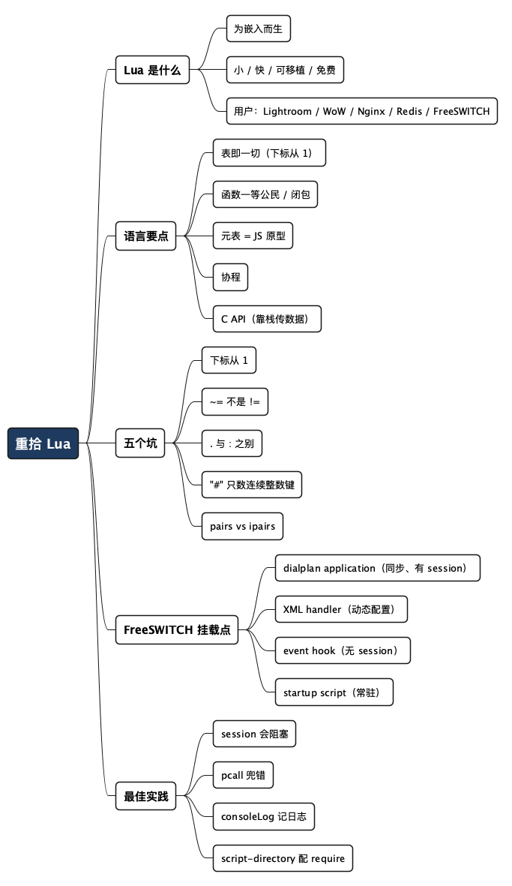

重拾 Lua：从月亮语言到 FreeSWITCH 里的胶水
Posted on 一 14 9月 2026 in Tech
| Abstract | 重拾 Lua：从月亮语言到 FreeSWITCH 里的胶水 |
|---|---|
| Authors | Walter Fan |
| Category | Tech |
| Status | v1.0 |
| Updated | 2026-09-14 |
| License | CC-BY-NC-ND 4.0 |
大纲
展开看看
- 缘起：十几年前我讲过一场《A Glance of Lua》，如今忘了大半。趁着最近在扒 FreeSWITCH，把这门语言重新拾起来，顺便讲清它在 FreeSWITCH 里到底干什么活。
- Lua 是什么：一门为“被嵌入”而生的脚本语言。小、快、可移植，靠一个 C API 长在别人家的进程里。Photoshop Lightroom、魔兽世界、Wireshark、Nginx、Redis、FreeSWITCH——它专门干这个。
- 重拾要点（老程序员版）：表即一切（数组从 1 开始）、函数是一等公民、元表就是 JS 的原型、闭包和协程、以及那个把它送进无数大项目的 C API。
- 五个最容易忘、也最容易栽的坑：下标从 1、
~=不是!=、.与:的静态/实例之别、#只数连续整数键、pairsvsipairs。 - 落到 FreeSWITCH：mod_lua 默认加载，脚本直接跑在交换机进程里。四个挂载点——dialplan application、XML handler、event hook、startup script——各配一个能看懂的例子。
- 最佳实践 + 常见陷阱：脚本目录与
require路径、session是会阻塞的、别在 hook 里干重活、错误要pcall兜住、日志用freeswitch.consoleLog。 - 收尾：Lua 在 FreeSWITCH 里的定位是“胶水”，不是“主料”——想清楚这一点，才知道什么该写进脚本，什么该留在 C 模块里。
我电脑里翻出一个 2013 年做的 PPT，标题叫《A Glance of Lua》。那会儿我还能顺手写出插入排序、元表继承、lua_State 压栈弹栈的 C API，甚至比过 Luabind、tolua++、SWIG 几种绑定方案的优劣。十几年过去，这门语言我基本没再碰，再看那些幻灯片，有些代码得盯半天才想起来当初为什么那么写。
最近在扒 FreeSWITCH 的源码——前面几篇分别拆了它的动态加载与服务注册、APR 内存池、浏览器直连的 WebRTC 通话——绕来绕去总会撞见 Lua。FreeSWITCH 默认就把 mod_lua 装上了，很多呼叫逻辑、IVR 菜单、动态配置都是 Lua 写的。于是干脆借这个由头，把 Lua 重新拾起来。
这篇分两半：上半场用“老程序员重拾旧语言”的角度，把 Lua 最该记住的东西快速过一遍；下半场落到 FreeSWITCH，讲清脚本到底挂在哪几个位置，配例子、最佳实践和坑。 语言部分基于 Lua 5.x 语法，FreeSWITCH 部分引用官方 scripting 文档。
- 只想看 FreeSWITCH 怎么用的，可以直接跳到“落到 FreeSWITCH”那节。
- 想先把 Lua 捡回来的，跟着上半场走。
Lua 是什么：一门为“寄生”而生的语言
Lua（葡萄牙语里是“月亮”的意思，念作 LOO-ah）是一门小、快、可嵌入的脚本语言。关键词是“可嵌入”——它从设计第一天起就不打算独立当主角，而是长在别人家的进程里，负责那些“不值得用 C 重编一次、又需要灵活改”的活儿。
看看它的用户名单就明白定位了：Adobe Photoshop Lightroom 用它做界面逻辑，魔兽世界用它写插件，Wireshark 用它写协议解析器，Nginx（OpenResty）、Redis、FreeSWITCH 都把它嵌进核心。它们要的都是同一件事：一个能安全地跑用户脚本、又不拖累主程序的小引擎。
为什么是 Lua 而不是别的？简单说：
- 小——整个解释器编译出来几百 KB，可以静态编进你的二进制。
- 快——它跑的是寄存器式虚拟机的字节码，在脚本语言里算快的。
- 可移植——纯 ANSI C 写的，凡是有 C 编译器的地方就能跑。
- 免费——MIT 协议，商用无负担。
一句话概括它的性格：do more with less，用尽量少的东西干尽量多的事。这也是为什么它的语法学起来快，忘起来也快——因为核心概念真的没几个。
重拾要点：老程序员该先想起哪几样
十几年没写，再上手其实不用从头学。Lua 的核心就那么几块，抓住它们，剩下的查手册就够了。
表（table）即一切
Lua 只有一种复合数据结构：表。它既是数组，又是哈希表，还是对象、模块、命名空间。你在别的语言里区分的 list / dict / object，在 Lua 里都是同一个 table。
local user = { name = "tom", age = 30 } -- 当哈希表用
local arr = { 10, 20, 30 } -- 当数组用（下标从 1 开始！）
print(user.name) -- tom
print(arr[1]) -- 10，不是 arr[0]
下标从 1 开始，这是所有 C/Java/Python 程序员来写 Lua 的第一个坑，后面还要专门说。
函数是一等公民
跟 JavaScript 一样，函数在 Lua 里是值：可以赋给变量、当参数传、当返回值。这带来了几个很好用的特性——多返回值、变长参数、闭包。
-- 多返回值：一次拆出字符串两侧
local function split_once(str, sep)
local i, j = string.find(str, sep)
return string.sub(str, 1, i - 1), string.sub(str, j + 1)
end
local left, right = split_once("key=value", "=")
print(left, right) -- key value
-- 闭包：每调一次 counter，内部的 i 都还记得
local function new_counter()
local i = 0
return function()
i = i + 1
return i
end
end
local next_id = new_counter()
print(next_id(), next_id(), next_id()) -- 1 2 3
闭包那个 i 被内层函数“记住”了——这就是闭包的全部魔法：函数带着它出生时的环境一起走。
元表（metatable）：就是 JavaScript 的原型
这是 Lua 最容易忘、也最能体现它“简单但强大”的地方。表本身没有继承、没有运算符重载，但你可以给一个表挂一个元表，在元表里定义一批 __ 开头的“元方法”，来接管这个表的各种行为。
最常用的是 __index：当你访问一个表里没有的键时，Lua 会去元表的 __index 里找。这一个机制就够拼出继承了。
local Animal = {}
function Animal:speak() return self.name .. " makes a sound" end
local dog = { name = "Rex" }
setmetatable(dog, { __index = Animal }) -- dog 找不到的，去 Animal 找
print(dog:speak()) -- Rex makes a sound
我当年 PPT 里写过一句话形容它：“走起来像鸭子、游起来像鸭子、叫起来像鸭子，那它就是鸭子。” 元表就是 Lua 的“鸭子类型”开关——你不需要类，只需要让一个表在被访问、被调用、被相加时表现得像你要的那个东西。除了 __index，还有 __call（让表能像函数一样被调用）、__add（重载 +）、__newindex（拦截赋值）等一整套。
协程（coroutine）
Lua 内建协程——可以主动让出（yield）和恢复（resume）的“协作式线程”。它不是抢占式的操作系统线程，而是你自己控制切换时机的执行流。写状态机、写生成器、写异步流程时特别顺手。FreeSWITCH 的一些异步场景底下就有它的影子。
C API：它能寄生的根本原因
前面说 Lua“为嵌入而生”，靠的就是一套干净的 C API。宿主程序（C/C++ 写的那个）通过一个 lua_State 跟脚本打交道，双方用一个栈传数据：C 往栈上压参数，Lua 取走；Lua 返回值压栈，C 弹出。
lua_State *L = luaL_newstate(); // 新建一个 Lua 状态机
luaL_openlibs(L); // 打开标准库
luaL_dostring(L, "print('Hello from Lua')"); // 跑一段脚本
lua_close(L); // 别忘了关
反过来，C 也能把自己的函数注册进去，让 Lua 调用；这正是 FreeSWITCH 把成百上千个 switch_* 能力暴露给脚本的方式——通过 SWIG 自动生成绑定，脚本里一个 session:answer() 背后就是一次 C 调用。理解了“C 和 Lua 靠一个栈来回倒数据”，你就理解了 mod_lua 的本质。
五个最容易栽的坑
我把当年 PPT 里那页 “The Pitfall of Lua” 重新校对了一遍，这五条到今天依然是新手（和忘光了的老手）最常摔的地方：
| 坑 | 说明 | 正确写法 |
|---|---|---|
| 下标从 1 | 表当数组用时，第一个元素是 t[1] 不是 t[0] |
for i = 1, #t do ... end |
~= 不是 != |
Lua 的“不等于”是波浪号，写 != 直接语法错误 |
if a ~= b then ... end |
. 与 : 有别 |
obj.method 是普通字段，obj:method 会隐式传 self；定义和调用要用同一种 |
function obj:m() ... end 配 obj:m() |
# 只数连续整数键 |
表长度运算符 # 只统计从 1 开始、连续的整数键，中间断了就不准 |
有空洞的表自己维护 count |
pairs vs ipairs |
ipairs 按 1,2,3… 顺序遍历到第一个 nil 就停；pairs 遍历所有键但顺序不保证 |
数组用 ipairs，哈希表用 pairs |
第三条那个 . 和 : 的区别，是 FreeSWITCH 脚本里最常见的报错来源。你想调 session 上的方法，写成 session.answer() 就会因为少传 self 而出错，得写 session:answer()。记住：冒号 = 带 self 的实例调用。
落到 FreeSWITCH：mod_lua 把脚本挂在哪
铺垫完语言，进正题。FreeSWITCH 是个开源软交换（软件电话交换机，处理呼叫、媒体、SIP 信令），几十万行 C。它把 Lua 解释器直接嵌进交换机进程——脚本不是外部程序，不走进程间通信，而是在一个专属的 lua_State 里跑，通过 SWIG 绑定直接够到 FreeSWITCH 的全部 C API。
mod_lua 是默认加载的（modules.conf.xml 里就配好了），Perl、Python3、V8（JavaScript）、Java 也能用，但都得手动打开。所以在 FreeSWITCH 世界里，Lua 是脚本的“默认语言”。
它注册了四个挂载点，也就是你能把 Lua 脚本插进 FreeSWITCH 的四个位置：
- dialplan application——在一路通话里同步执行脚本，控制呼叫流程。
- XML handler——让脚本动态生成配置（dialplan / directory 等），替代静态 XML。
- event hook——某个事件触发时跑脚本，做事件响应。
- startup script——模块加载时起一个后台线程，跑常驻脚本。
下面一个个看。
脚本目录：相对路径去哪找
先记住一件事：脚本的相对路径是相对 $${script_dir} 解析的，标准安装通常是 /usr/local/freeswitch/scripts。你在 fs_cli 里可以确认：
eval $${script_dir}
只要脚本名不以 / 开头，FreeSWITCH 就会自动拼上这个目录；绝对路径则原样使用。
挂载点一：dialplan application
这是最常用的。在 dialplan 里用 lua 这个 application，脚本会同步跑在当前通话腿上，整通电话会等它执行完。脚本里自动有一个全局的 session 对象，代表这路通话。
<extension name="ivr-entry">
<condition field="destination_number" expression="^1000$">
<action application="lua" data="ivr_menu.lua option1 option2"/>
</condition>
</extension>
ivr_menu.lua 因为是相对路径，会被解析成 $${script_dir}/ivr_menu.lua。传进去的参数，脚本里用全局表 argv 取：argv[0] 是脚本名，argv[1] 起是真正的参数。
一个能看懂的 IVR 小例子：
-- ivr_menu.lua：一个极简的语音菜单
session:answer() -- 接起来
session:sleep(500) -- 等半秒，别把提示音说太急
-- 放一段提示音，收一位按键；参数：提示音、超时、位数……
local digit = session:playAndGetDigits(
1, 1, 3, 5000, "#",
"ivr/ivr-welcome.wav", -- 提示音
"ivr/ivr-that_was_an_invalid_entry.wav", -- 错误音
"\\d" -- 只收一位数字
)
if digit == "1" then
session:execute("transfer", "2001 XML default") -- 转到分机 2001
elseif digit == "2" then
session:execute("transfer", "2002 XML default")
else
session:streamFile("ivr/ivr-invalid_extension.wav")
session:hangup()
end
注意所有方法都是 session:xxx()，冒号——这就是前面那第三条坑的实战。
挂载点二：XML handler（动态配置）
FreeSWITCH 需要某段配置时，会去问注册过的 XML handler。你可以让一个 Lua 脚本来“现造”这段 XML，把 dialplan、directory 这些从静态文件变成动态生成——比如从数据库里查用户、按时间段路由。
在 lua.conf.xml 里绑定，注意两个参数必须有先后顺序，xml-handler-script 要在 xml-handler-bindings 前面：
<param name="xml-handler-script" value="xml_handler.lua"/>
<param name="xml-handler-bindings" value="dialplan"/>
脚本被调用时，FreeSWITCH 通过全局变量传上下文：XML_REQUEST 是个表，带 section / tag_name / key_name / key_value 说明在请求什么；params 是个事件对象，带通道变量。脚本的活儿是把最终 XML 塞进全局变量 XML_STRING：
-- xml_handler.lua
local req = XML_REQUEST -- req.section / req.key_value 由 FreeSWITCH 填好
-- 真实场景里，这里会根据 req.key_value 去数据库查路由
XML_STRING = [[
<document type="freeswitch/xml">
<section name="dialplan">
<context name="default">
<extension name="dynamic">
<condition field="destination_number" expression="^(\d+)$">
<action application="bridge" data="user/${1}"/>
</condition>
</extension>
</context>
</section>
</document>
]]
[[ ... ]] 是 Lua 的长字符串语法，写多行 XML 正合适。
挂载点三：event hook（事件响应）
lua.conf.xml 里 <settings> 中的 <hook> 元素，把一个 Lua 脚本绑到某个 FreeSWITCH 事件上。事件每触发一次，脚本在一个专属线程里跑一次，事件对象通过全局 event 拿到。
<hook event="CHANNEL_HANGUP" script="on_hangup.lua"/>
<hook event="CUSTOM" subclass="conference::maintenance" script="catch-event.lua"/>
-- on_hangup.lua：每次挂机都记一笔
local uuid = event:getHeader("Unique-ID")
local cause = event:getHeader("Hangup-Cause")
freeswitch.consoleLog("notice",
string.format("call %s hung up, cause=%s\n", uuid, cause))
用 event:getHeader(...) 取事件头，冒号，还是那第三条坑。
挂载点四：startup script（常驻后台）
startup-script 参数让脚本在 mod_lua 加载时起一个后台线程，可以一直跑。适合做常驻的事件监听器、定时器、跟外部系统对接的循环。它没有通话 session。
<param name="startup-script" value="event_daemon.lua"/>
<param name="startup-script" value="presence_manager.lua"/>
多个 startup script 会依次启动，每个之间有 10 毫秒的间隔，避免 Lua 初始化打架。
最佳实践与常见陷阱
例子会写只是及格，知道哪里会炸才算入门。下面几条是 FreeSWITCH + Lua 组合里最值得先记住的。
session 是会阻塞的——想清楚再用
dialplan 里的 lua application 是同步的：脚本不返回，这通电话就一直被你占着。所以脚本里别干耗时的活儿（同步 HTTP 请求、慢查询），否则这路通话会一直挂着。要做重活，考虑放到 startup script 的后台线程里，或者走异步。
hook 和 startup 里没有 session，别乱用 session API
event hook、startup script 都没有通话 session——它们不在某一路电话的上下文里。在这些脚本里调 session:xxx() 会直接出错。它们能用的是 event（hook 里）和各种 freeswitch.API() 这类全局能力。
错误要用 pcall 兜住
Lua 脚本里一个未捕获的错误，轻则中断这段逻辑，重则在关键路径上留下半截状态。对可能失败的调用（尤其是外部 IO），用 pcall 包一层：
local ok, err = pcall(function()
-- 可能抛错的代码
do_something_risky()
end)
if not ok then
freeswitch.consoleLog("err", "failed: " .. tostring(err) .. "\n")
-- 兜底处理，别让整通电话烂在这里
end
日志走 freeswitch.consoleLog，别用 print
脚本里 print 出来的东西不一定进 FreeSWITCH 的日志体系。要留痕迹用 freeswitch.consoleLog(level, message)，level 是 debug / info / notice / warning / err 之一，消息记得自己带换行 \n。
require 找不到模块？检查 script-directory
想在脚本里 require 别的 .lua 模块，得先在 lua.conf.xml 里配 script-directory，用 ?.lua 通配：
<param name="script-directory" value="$${script_dir}/?.lua"/>
这实际上是往 Lua 的 LUA_PATH 前面加路径。native 的 C 扩展（.so）则用 module-directory 配 LUA_CPATH。这两个配错，是“我明明放了模块却 require 不到”的头号原因。
改了脚本不一定要重启
dialplan / hook 里引用的脚本，通常每次执行都重新读，改完直接生效。但 lua.conf.xml 本身是模块加载时读一次的，改了配置要在 fs_cli 里 reload mod_lua。startup script 改了则要重载模块或重启进程才会重新起线程。
陷阱清单速查
| 症状 | 多半是 | 怎么办 |
|---|---|---|
attempt to index a nil value |
用了 . 该用 :，或 session 不存在 |
实例方法用冒号；hook/startup 里别用 session |
| 脚本报语法错却看不出哪 | 写了 != |
改成 ~= |
| 遍历表漏了元素 | 表有空洞还用 ipairs/# |
哈希表用 pairs；数组保持连续 |
require 报 module not found |
没配 script-directory |
在 lua.conf.xml 里加 ?.lua 路径 |
| 改了配置不生效 | 改的是 lua.conf.xml |
reload mod_lua |
| 一通电话卡住不挂 | 在 lua application 里做了慢 IO |
挪到后台线程或改异步 |
| 日志里找不到脚本输出 | 用了 print |
换 freeswitch.consoleLog |
总结：Lua 在 FreeSWITCH 里是胶水，不是主料
重新拾起 Lua，最大的感受是：这门语言的定位从头到尾没变过——它是胶水，不是主料。
FreeSWITCH 的重活（媒体处理、协议栈、状态机）都在 C 模块里，Lua 负责的是那些“需要经常改、又不值得重编一次核心”的黏合逻辑：呼叫怎么路由、IVR 菜单怎么走、事件来了记什么。想清楚这条边界，你就知道什么该写进 Lua 脚本、什么该老老实实回到 C 模块里去。写脚本时贪多，把重逻辑堆进 lua application，卡住通话；或者该动态生成配置时死抱着静态 XML——都是没认清这层定位。
一句话收尾：
Lua 之所以能长在这么多大项目里，靠的不是功能多，而是够克制。 在 FreeSWITCH 里用它，也请保持这份克制——脚本只做胶水该做的事。
上手清单
- [ ]
fs_cli里eval $${script_dir}确认脚本目录。 - [ ] 分清四个挂载点：dialplan（同步、有 session）、XML handler（动态配置）、hook（事件、无 session）、startup（常驻、无 session）。
- [ ] 所有实例方法用冒号：
session:answer()、event:getHeader()。 - [ ] 外部 IO 用
pcall兜错，日志用freeswitch.consoleLog。 - [ ] 要
require别的模块，先在lua.conf.xml配好script-directory。 - [ ] 改了
lua.conf.xml记得reload mod_lua。 - [ ] 别在
luaapplication 里做慢 IO，重活挪到后台。
全文思维导图
@startmindmap
<style>
mindmapDiagram {
node {
BackgroundColor #F8F9FA
RoundCorner 10
Padding 10
FontSize 13
}
:depth(0) {
BackgroundColor #1E3A5F
FontColor white
FontSize 18
FontStyle bold
}
:depth(1) {
FontSize 15
FontStyle bold
}
:depth(2) {
FontSize 13
}
}
</style>
* 重拾 Lua
** Lua 是什么
*** 为嵌入而生
*** 小 / 快 / 可移植 / 免费
*** 用户：Lightroom / WoW / Nginx / Redis / FreeSWITCH
** 语言要点
*** 表即一切（下标从 1）
*** 函数一等公民 / 闭包
*** 元表 = JS 原型
*** 协程
*** C API（靠栈传数据）
** 五个坑
*** 下标从 1
*** ~= 不是 !=
*** . 与 : 之别
*** "#" 只数连续整数键
*** pairs vs ipairs
** FreeSWITCH 挂载点
*** dialplan application（同步、有 session）
*** XML handler（动态配置）
*** event hook（无 session）
*** startup script（常驻）
** 最佳实践
*** session 会阻塞
*** pcall 兜错
*** consoleLog 记日志
*** script-directory 配 require
@endmindmap

本作品采用知识共享署名-非商业性使用-禁止演绎 4.0 国际许可协议进行许可。 欢迎在我的个人网站 https://www.fanyamin.com 访问原文并评论。